Section A (multiple choice). Questions 1 to 60 are multiple choice with every correct answer carrying 1 mark and every wrong answer carrying -0.25 mark. [1]
A potential difference vs distance graph is given. Choose the correct option for the electric field vs. distance graph from the given options:
Quesito 1
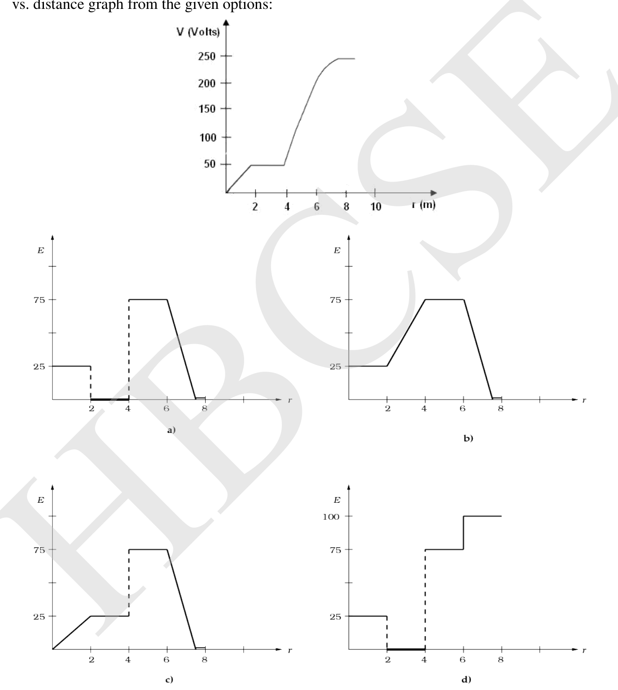
Topic: Electrostatics Metodi: Electric Potential Method Competenze: Diagrammatic Reasoning Objects: — Fonte: Testo (PDF) — p.1
Sezione A (scelta multipla). Le domande da 1 a 60 sono di scelta multipla con ogni risposta corretta con un marchio 1 e ogni risposta sbagliata con un marchio -0,25. [1]
Si dà una differenza potenziale vs grafico di distanza. Scegli l’opzione corretta per il campo elettrico vs. grafico di distanza dalle opzioni indicate:
Quesito 1
Topic: Electrostatics Metodi: Electric Potential Method Competenze: Diagrammatic Reasoning Objects: — Fonte: Testo (PDF) — p.1
Separate solutions of HCl (aq) and of the same molar concentration and same volume were completely neutralized by NaOH (aq). kJ and kJ of heat were evolved respectively. Which statement is correct? [1]
- (a)
- (b)
- (c)
- (d)
Topic: Chemistry Metodi: Physical Modeling Competenze: Physical Reasoning Objects: — Fonte: Testo (PDF) — p.2
Le soluzioni separate di HCl (aq) e della stessa concentrazione molare e dello stesso volume sono state completamente neutralizzate da NaOH (aq). Sono stati sviluppati rispettivamente kJ e kJ di calore. Quale affermazione è corretta? [1]
- (a)
- (b)
- (c)
- (d)
Topic: Chemistry Metodi: Physical Modeling Competenze: Physical Reasoning Objects: — Fonte: Testo (PDF) — p.2
The figure below gives the level of ovarian and gonadotropic hormone in a blood sample of a normal healthy female of 35 years. According to you, which phase of menstrual cycle was she undergoing at the time of blood test? [1]
Quesito 3
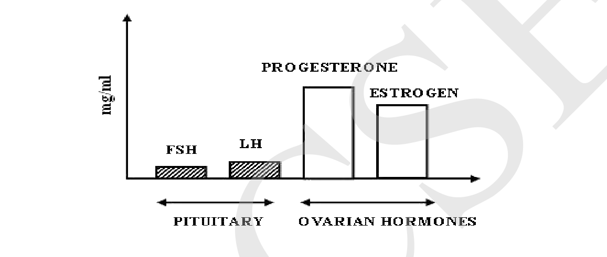
- (a) Menstrual phase
- (b) Proliferative phase
- (c) Ovulatory phase
- (d) Luteal or Secretory phase
Topic: Biology Metodi: Physical Modeling Competenze: Diagrammatic Reasoning Objects: — Fonte: Testo (PDF) — p.2
La figura seguente indica il livello di ormoni ovarici e gonadotropici in un campione di sangue di una femmina normale e sana di 35 anni. Secondo lei, quale fase del ciclo mestruale stava subendo al momento dell’analisi del sangue? [1]
Quesito 3
- a) Fase mestruale
- (b) Fase proliferativa
- (c) Fase ovulatoria
- (d) Fase lutiale o secretaria
Topic: Biology Metodi: Physical Modeling Competenze: Diagrammatic Reasoning Objects: — Fonte: Testo (PDF) — p.2
Muscles containing large amounts of Myoglobin are likely to be found in a… [1]
- (a) marathon runner
- (b) 100 m sprinter
- (c) high jumper
- (d) gymnast
Topic: Biology Metodi: Physical Modeling Competenze: Physical Reasoning Objects: — Fonte: Testo (PDF) — p.2
I muscoli contenenti grandi quantità di mioglobina sono probabilmente trovati in un… [1]
- (a) corridore di maratona
- b) sprinter a 100 m
- (c) salto alto
- (d) ginnasta
Topic: Biology Metodi: Physical Modeling Competenze: Physical Reasoning Objects: — Fonte: Testo (PDF) — p.2
The maximum number of Hydrogen bonds in which hydrogen fluoride molecule can participate are: [1]
- (a) 2
- (b) 3
- (c) 4
- (d) 5
Topic: Chemistry Metodi: Physical Modeling Competenze: Physical Reasoning Objects: — Fonte: Testo (PDF) — p.2
Il numero massimo di legami ad idrogeno in cui può partecipare la molecola di fluoruro di idrogeno è: [1]
- (a) 2
- (b) 3
- (c) 4
- (d) 5
Topic: Chemistry Metodi: Physical Modeling Competenze: Physical Reasoning Objects: — Fonte: Testo (PDF) — p.2
A ball is dropped from a height on a floor and suffers multiple perfectly elastic bounces. The velocity vs graph is as shown. Here time depicts the time required to complete one cycle. Which of the following graph correctly shows the cumulative distance vs time? [1]
Quesito 6
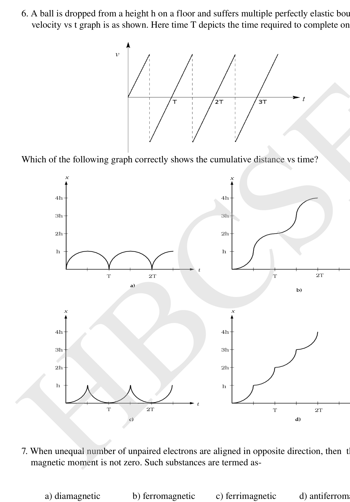
Topic: Newtonian Mechanics, Conservation of Energy Metodi: Kinematic Equations, Conservation of Energy Competenze: Diagrammatic Reasoning Objects: Ball Fonte: Testo (PDF) — p.3
Una palla viene abbassata da un’altezza su un pavimento e subisce più rimbalzi perfettamente elastici. La velocità vs grafico è come mostrato. Qui il tempo descrive il tempo necessario per completare un ciclo. Quale dei seguenti grafici mostra correttamente la distanza cumulativa vs tempo? [1]
Quesito 6
Topic: Newtonian Mechanics, Conservation of Energy Metodi: Kinematic Equations, Conservation of Energy Competenze: Diagrammatic Reasoning Objects: Ball Fonte: Testo (PDF) — p.3
When unequal number of unpaired electrons are aligned in opposite direction, then the net magnetic moment is not zero. Such substances are termed as- [1]
- (a) diamagnetic
- (b) ferromagnetic
- (c) ferrimagnetic
- (d) antiferromagnetic
Topic: Magnetism Metodi: Physical Modeling Competenze: Physical Reasoning Objects: — Fonte: Testo (PDF) — p.3
Quando un numero diseguale di elettroni non accoppiati è allineato in direzione opposta, allora il momento magnetico netto non è zero. Tali sostanze sono denominate: [1]
- a) diamagnetico
- b) ferromagnetico
- c) ferrimagnetico
- d) antiferromagnetico
Topic: Magnetism Metodi: Physical Modeling Competenze: Physical Reasoning Objects: — Fonte: Testo (PDF) — p.3
A man of height walking away from a lamp post finds his shadow to be equal to his height when he is at a distance from the lamp post. If the height of the lamp post is , then is [1]
- (a)
- (b)
- (c)
- (d)
Topic: Geometric Optics Metodi: Ray Tracing, Small-Angle Approximation Competenze: Diagrammatic Reasoning Objects: — Fonte: Testo (PDF) — p.4
Un uomo di altezza che si allontana da un palo di lampada trova la sua ombra uguale alla sua altezza quando si trova a una distanza dal palo di lampada. Se l’altezza del poste di lampada è , allora è [1]
- (a)
- (b)
- (c)
- (d)
Topic: Geometric Optics Metodi: Ray Tracing, Small-Angle Approximation Competenze: Diagrammatic Reasoning Objects: — Fonte: Testo (PDF) — p.4
Anil, an 8th grade student, was asked to draw a figure explaining how the mammalian eye collects and focuses light, converting it into electrical signals. Which of the following flow charts correctly represents the process? [1]
- (a) Light → Cornea → Aqueous humor → Pupil → Lens → Vitreous humor → Retina → Action potentials in neurons → Optic nerve → Brain.
- (b) Light → Sclera → Vitreous humor → Pupil → Lens → Aqueous humor → Retina → Action potentials in neurons → Optic nerve → Brain.
- (c) Light → Sclera → Cornea → Aqueous humor → Pupil → Lens → Vitreous humor → Retina → Action potentials in neurons → Optic nerve → Brain.
- (d) Light → Cornea → Aqueous humor → Iris → Lens → Vitreous humor → Retina → Action potentials in neurons → Optic nerve → Brain.
Topic: Biology Metodi: Physical Modeling Competenze: Diagrammatic Reasoning Objects: — Fonte: Testo (PDF) — p.4
Anil, studente di 8° grado, fu chiesto di disegnare una figura che spiegasse come l’occhio dei mammiferi raccoglie e concentra la luce, trasformandola in segnali elettrici. Quale dei seguenti grafici di flusso rappresenta correttamente il processo? [1]
- (a) Legge → Cornea → Umor acqueo → Pupilla → Lenti → Umor vitreo → Retina → Potenziali di azione nei neuroni → Nervo ottico → Cervello.
- (b) Legge → Sclera → Umor vitreo → Pupilla → Lenti → Umor acqueo → Retina → Potenziali di azione nei neuroni → Nervo ottico → Cervello.
- (c) Legge → Sclera → Cornea → Umor acqueo → Pupilla → Lenti → Umor vitreo → Retina → Potenziali di azione nei neuroni → Nervo ottico → Cervello.
- (d) Legge → Cornea → Humore acqueo → Iris → Lenti → Humore vitreo → Retina → Potenziali di azione nei neuroni → Nervo ottico → Cervello.
Topic: Biology Metodi: Physical Modeling Competenze: Diagrammatic Reasoning Objects: — Fonte: Testo (PDF) — p.4
In a housing society, a water pump of efficiency 80% is used to lift water upto the overhead tank. It lifts 3600 kg water in 10 minutes. The pump is run on an electric motor having efficiency 75%. Calculate horse power of the motor. Water tank is 30 m above the basement tank level. [1]
- (a) 4 HP
- (b) 240 HP
- (c) 3.2 HP
- (d) 2.4 HP
Topic: Conservation of Energy Metodi: Energy Conservation Method Competenze: Unit Conversion Objects: Container Fonte: Testo (PDF) — p.4
In una società abitativa, una pompa d’acqua di efficienza dell’80% viene utilizzata per sollevare l’acqua fino al serbatoio. Solleva 3.600 kg di acqua in 10 minuti. La pompa è alimentata da un motore elettrico con un’efficienza del 75%. Calcolare la potenza a cavallo del motore. Il serbatoio d’acqua è a 30 m sopra il livello del serbatoio sotterraneo. [1]
- (a) 4 HP
- (b) 240 HP
- (c) 3.2 HP
- (d) 2.4 HP
Topic: Conservation of Energy Metodi: Energy Conservation Method Competenze: Unit Conversion Objects: Container Fonte: Testo (PDF) — p.4
When a compressed gas is allowed to expand through a small orifice cooling effect is caused if [1]
- (a) the temperature of the gas is less than the inversion temperature ()
- (b) the temperature of the gas is greater than the inversion temperature ()
- (c) the temperature of the gas is equal to the critical temperature
- (d) the temperature of the gas is 273 K.
Topic: Thermodynamics, Kinetic Theory Metodi: First Law of Thermodynamics Competenze: Physical Reasoning Objects: Gas Fonte: Testo (PDF) — p.4
Quando un gas compresso è permesso di espandersi attraverso un piccolo effetto di raffreddamento dell’orfice, si verifica se [1]
- a) la temperatura del gas è inferiore alla temperatura di inversione ()
- b) la temperatura del gas è superiore alla temperatura di inversione ()
- la temperatura del gas è pari alla temperatura critica
- d) la temperatura del gas è di 273 K.
Topic: Thermodynamics, Kinetic Theory Metodi: First Law of Thermodynamics Competenze: Physical Reasoning Objects: Gas Fonte: Testo (PDF) — p.4
As we know, a code of three nitrogen bases is responsible for specifying one amino acid. In an ideal case, how many nitrogen bases would be present on a messenger RNA that transcribes a polypeptide containing 57 amino acids? [1]
- (a) 174
- (b) 168
- (c) 171
- (d) 19
Topic: Biology Metodi: Physical Modeling Competenze: Physical Reasoning Objects: — Fonte: Testo (PDF) — p.4
Come sappiamo, un codice di tre basi di azoto è responsabile della specifica di un aminoacido. In un caso ideale, quante basi di azoto sarebbero presenti su un RNA messaggero che trascrive un polipeptide contenente 57 amminoacidi? [1]
- (a) 174
- (b) 168
- (c) 171
- (d) 19
Topic: Biology Metodi: Physical Modeling Competenze: Physical Reasoning Objects: — Fonte: Testo (PDF) — p.4
A student adds 5.85 gm of NaCl to 1 litre of water (the pH of which was measured to be 7.0) in a flask (X) to make a 0.1 M solution. He transfers 500 ml into another flask (Y). He covers the flask (Y) with tissue paper and the original flask (X) with a watch glass and goes to watch a movie. When he returns to the lab the next morning, he checks the pH of both the solutions using a perfectly calibrated pH meter. Which of the following is correct? [1]
- (a) X has pH = 7 and Y has pH > 7
- (b) X has pH < 7 and Y has pH = 7
- (c) X has pH = 7 and Y has pH < 7
- (d) Both X and Y have pH = 7
Topic: Chemistry Metodi: Physical Modeling Competenze: Physical Reasoning Objects: — Fonte: Testo (PDF) — p.5
Uno studente aggiunge 5,85 g di NaCl a 1 litro di acqua (il cui pH è stato misurato a 7,0) in un flacone (X) per realizzare una soluzione di 0,1 M. Trasferisce 500 ml in un altro flacone (Y). Copre il flaconcino (Y) con carta tissue e il flaconcino originale (X) con un vetro di orologio e va a guardare un film. Quando torna al laboratorio la mattina dopo, verifica il pH di entrambe le soluzioni usando un pH-meter perfettamente calibrato. Quale di queste parole è corretta? [1]
- (a) X ha pH = 7 e Y ha pH > 7
- (b) X ha pH < 7 e Y ha pH = 7
- (c) X ha pH = 7 e Y ha pH < 7
- (d) Sia X che Y hanno pH = 7
Topic: Chemistry Metodi: Physical Modeling Competenze: Physical Reasoning Objects: — Fonte: Testo (PDF) — p.5
Some epiphytes are also referred to as “space parasites” because they [1]
- (a) compete with the species on which they are growing for food.
- (b) occupy large land space.
- (c) take food and support from the plant on which they are growing.
- (d) may choke the species supporting them by their luxuriant growth.
Topic: Biology Metodi: Physical Modeling Competenze: Physical Reasoning Objects: — Fonte: Testo (PDF) — p.5
Alcuni epifiti sono anche chiamati “parassiti spaziali” perché [1]
- a) competere con le specie su cui si coltivano per il cibo.
- b) occupano un ampio territorio.
- prendere il cibo e il supporto dalla pianta su cui si stanno coltivando.
- d) possono soffocare le specie che le sostengono con la loro crescita lussuosa.
Topic: Biology Metodi: Physical Modeling Competenze: Physical Reasoning Objects: — Fonte: Testo (PDF) — p.5
Perpetual motion of a body cannot be achieved on earth as it violates the law of
i) conservation of momentum ii) conservation of energy iii) law of conservation of mass
Which of the above is/are in correct? [1]
- (a) only i
- (b) only ii
- (c) i and ii
- (d) i, ii and iii
Topic: Conservation of Energy, Conservation of Momentum Metodi: Conservation Laws Competenze: Physical Reasoning Objects: — Fonte: Testo (PDF) — p.5
Il movimento perpetuo di un corpo non può essere raggiunto sulla terra , in quanto viola la legge della
i) conservazione dell’impulso ii) conservazione dell’energia iii) legge di conservazione della massa
Qual è/sono corretto? [1]
- (a) solo i
- b) solo ii
- (c) i e ii
- d) i, ii e iii
Topic: Conservation of Energy, Conservation of Momentum Metodi: Conservation Laws Competenze: Physical Reasoning Objects: — Fonte: Testo (PDF) — p.5
Two species live in the same locale but each one reproduces at different time of the year & both do not attempt to mate each other. This can be considered as an example of: [1]
- (a) gamete isolation
- (b) mechanical isolation
- (c) behavioral isolation
- (d) hybrid sterility
Topic: Biology Metodi: Physical Modeling Competenze: Physical Reasoning Objects: — Fonte: Testo (PDF) — p.5
Due specie vivono nella stessa località ma ognuna si riproduce in tempi diversi dell’anno e non tentano di accoppiarsi. Questo può essere considerato un esempio di: [1]
- a) isolamento dei gameti
- b) isolamento meccanico
- c) isolamento comportamentale
- d) sterilità ibrida
Topic: Biology Metodi: Physical Modeling Competenze: Physical Reasoning Objects: — Fonte: Testo (PDF) — p.5
A crystalline substance ‘A’ gave a precipitate when treated with barium nitrate. The aqueous solution of ‘A’ gave yellow colour with methyl orange indicator. The substance ‘A’ could be [1]
- (a)
- (b)
- (c) NaCl
- (d)
Topic: Chemistry Metodi: Physical Modeling Competenze: Physical Reasoning Objects: — Fonte: Testo (PDF) — p.5
Una sostanza cristallina “A” ha prodotto un precipitato quando trattata con nitrato di bario. La soluzione acquosa di “A” ha dato il colore giallo con indicatore metilarancio. La sostanza “A” potrebbe essere [1]
- (a)
- (b)
- (c) NaCl
- (d)
Topic: Chemistry Metodi: Physical Modeling Competenze: Physical Reasoning Objects: — Fonte: Testo (PDF) — p.5
A vehicle is moving on a road. Ink drops are falling, one at a time, on the road from the vehicle. After the vehicle has moved away, what one observes is shown (qualitatively) in the figure given below. From the figure we can conclude about the vehicle to be moving… [1]
Quesito 18
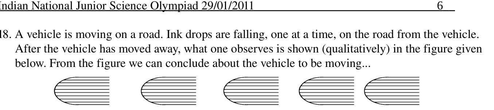
- (a) from left to right with increasing speed
- (b) from left to right with decreasing speed
- (c) from right to left with increasing speed
- (d) from right to left with decreasing speed
Topic: Newtonian Mechanics Metodi: Kinematic Equations Competenze: Diagrammatic Reasoning Objects: — Fonte: Testo (PDF) — p.6
Un veicolo si muove su una strada. Le gocce di inchiostro cadono, una alla volta, sulla strada dal veicolo. Dopo che il veicolo si è allontanato, ciò che si osserva è mostrato (qualitativamente) nella figura riportata di seguito. Dalla figura possiamo concludere che il veicolo si sta muovendo… [1]
Quesito 18
- a) da sinistra a destra con velocità crescente
- b) da sinistra a destra con velocità decrescente
- c) da destra a sinistra con una velocità crescente
- d) da destra a sinistra con velocità decrescente
Topic: Newtonian Mechanics Metodi: Kinematic Equations Competenze: Diagrammatic Reasoning Objects: — Fonte: Testo (PDF) — p.6
A space station is made to spin about an axis such that the astronauts inside feel their normal weight against the outermost wall. When they are at a level at half the distance from the axis of rotation as the outermost wall, they will feel the weight as [1]
- (a)
- (b)
- (c)
- (d)
Topic: Rotational Dynamics Metodi: Physical Modeling Competenze: Physical Reasoning Objects: — Fonte: Testo (PDF) — p.6
Una stazione spaziale è fatta girare attorno ad un asse in modo che gli astronauti dentro sentano il loro peso normale contro la parete più esterna. Quando sono a un livello a metà della distanza dall’asse di rotazione come parete più esterna, sentiranno il peso come [1]
- (a)
- (b)
- (c)
- (d)
Topic: Rotational Dynamics Metodi: Physical Modeling Competenze: Physical Reasoning Objects: — Fonte: Testo (PDF) — p.6
A few pairs of fruits are mentioned below. Using the criteria of classification of fruits, find the odd pair out. [1]
- (a) Pea, Bean
- (b) Custard apple, Fig
- (c) Pineapple, Jackfruit
- (d) Coconut, Mango
Topic: Biology Metodi: Physical Modeling Competenze: Physical Reasoning Objects: — Fonte: Testo (PDF) — p.6
Di seguito sono menzionate alcune coppie di frutta. Usando i criteri di classificazione dei frutti, scopri la coppia strana. [1]
- a) Pico, fagiolo
- b) Mela di pastore, Fig
- (c) Ananas, giacca
- d) Noce di cocco, mango
Topic: Biology Metodi: Physical Modeling Competenze: Physical Reasoning Objects: — Fonte: Testo (PDF) — p.6
Which of the following solutions will have pH close to 1.0? [1]
- (a) 100 mL 0.1 M HCl + 100 mL 0.1 M NaOH
- (b) 55 mL 0.1 M HCl + 45 mL 0.1 M NaOH
- (c) 10 mL 0.1 M HCl + 90 mL 0.1 M NaOH
- (d) 75 mL 0.2 M HCl + 25 mL 0.2 M NaOH
Topic: Chemistry Metodi: Physical Modeling Competenze: Physical Reasoning Objects: — Fonte: Testo (PDF) — p.6
Quale delle seguenti soluzioni avrà un pH vicino a 1,0? [1]
- a) 100 ml 0,1 ml HCl + 100 ml 0,1 ml NaOH
- b) 55 ml 0,1 ml HCl + 45 ml 0,1 ml NaOH
- c) 10 ml 0,1 ml HCl + 90 ml 0,1 ml NaOH
- 75 ml 0,2 ml HCl + 25 ml 0,2 ml NaOH
Topic: Chemistry Metodi: Physical Modeling Competenze: Physical Reasoning Objects: — Fonte: Testo (PDF) — p.6
A block of mass 5 kg is to be dragged along a rough horizontal surface having and . The horizontal force applied for dragging it is 20 N. Acceleration of the block in and frictional force acting on the block in N are respectively [1]
- (a) 0, 20
- (b) 30, 15
- (c) 30, 25
- (d) 0, 15
Topic: Newtonian Mechanics Metodi: Free-Body Diagram, Newton’s Law of Gravitation Competenze: Physical Reasoning Objects: Block Fonte: Testo (PDF) — p.6
Un blocco di massa di 5 kg deve essere trascinato lungo una superficie orizzontale ruvida con e . La forza orizzontale applicata per trascinarlo è di 20 N. L’accelerazione del blocco in e la forza di attrito che agisce sul blocco in N sono rispettivamente [1]
- (a) 0, 20
- (b) 30, 15
- (c) 30, 25
- (d) 0, 15
Topic: Newtonian Mechanics Metodi: Free-Body Diagram, Newton’s Law of Gravitation Competenze: Physical Reasoning Objects: Block Fonte: Testo (PDF) — p.6
The pKa of aspirin, a weak acid, is 3.5. The pH of gastric juice in the human stomach is between 2 and 3, while that in the small intestine is about 8. Aspirin will be… [1]
- (a) unionized in the small intestine and the stomach
- (b) completely ionized in the small intestine and the stomach
- (c) ionized in the small intestine and almost unionized in the stomach
- (d) ionized in the stomach and almost unionized in the small intestine
Topic: Chemistry Metodi: Physical Modeling Competenze: Physical Reasoning Objects: — Fonte: Testo (PDF) — p.6
Il pKa dell’aspirina, un acido debole, è di 3,5. Il pH del succo gastrico nello stomaco umano è compreso tra 2 e 3, mentre quello dell’intestino tenue è di circa 8. L’aspirina sarà… [1]
- (a) unificati nell’intestino tenue e nello stomaco
- b) completamente ionizzata nell’intestino tenue e nello stomaco
- (c) ionizzati nell’intestino tenue e quasi unionizzati nello stomaco
- d) ionizzati nello stomaco e quasi unionizzati nell’intestino tenue
Topic: Chemistry Metodi: Physical Modeling Competenze: Physical Reasoning Objects: — Fonte: Testo (PDF) — p.6
In the following cross, the character indicated by males (darkened squares) and females (circle) is… [1]
Quesito 24
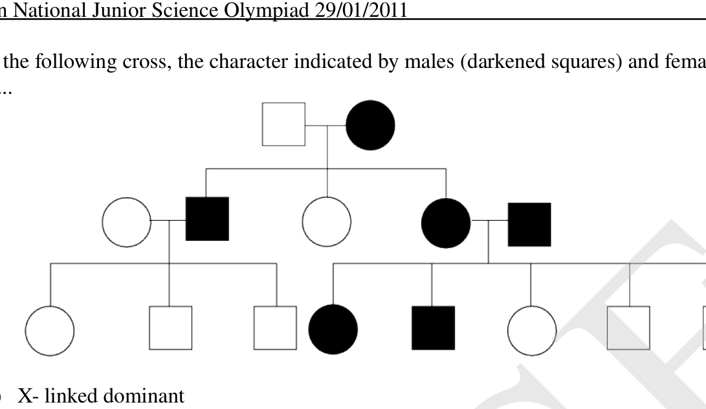
- (a) X-linked dominant
- (b) X-linked recessive
- (c) autosomal dominant
- (d) autosomal recessive
Topic: Biology Metodi: Physical Modeling Competenze: Diagrammatic Reasoning Objects: — Fonte: Testo (PDF) — p.7
Nella croce seguente, il carattere indicato dai maschi (quadrati scuri) e dalle femmine (cerchio) è… [1]
Quesito 24
- a) L’esistenza di un’esistenza dominante con collegamento X
- b) Recessivo con X-link
- c) autosomalmente dominante
- d) recessiva autosomica
Topic: Biology Metodi: Physical Modeling Competenze: Diagrammatic Reasoning Objects: — Fonte: Testo (PDF) — p.7
Had Newton and Einstein shaken their hands, which fundamental force they would have exerted on each other (During shaking their hands)? [1]
- (a) Frictional
- (b) Electromagnetic
- (c) Gravitational
- (d) Mechanical
Topic: Electromagnetism Metodi: Physical Modeling Competenze: Physical Reasoning Objects: — Fonte: Testo (PDF) — p.7
Newton e Einstein avrebbero stretto le mani, quale forza fondamentale avrebbero esercitato l’uno sull’altro (Durante il stretto delle mani)? [1]
- a) Frottatura
- b) elettromagnetici
- (c) Gravitazione
- d) Meccanico
Topic: Electromagnetism Metodi: Physical Modeling Competenze: Physical Reasoning Objects: — Fonte: Testo (PDF) — p.7
The compound whose 0.1 M solution is basic is [1]
- (a) Ammonium acetate
- (b) Ammonium chloride
- (c) Sodium acetate
- (d) Sodium sulphate
Topic: Chemistry Metodi: Physical Modeling Competenze: Physical Reasoning Objects: — Fonte: Testo (PDF) — p.7
Il composto la cui soluzione di base è di 0,1 M è [1]
- a) Acetato di ammonio
- b) Cloruro di ammonio
- (c) Acetato di sodio
- d) Sulfato di sodio
Topic: Chemistry Metodi: Physical Modeling Competenze: Physical Reasoning Objects: — Fonte: Testo (PDF) — p.7
A DNA molecule has the sequence CAT CAT CAT. If a guanine base is added at the beginning of the sequence, which of the following would be the MOST appropriate option – [1]
- (a) G CAT CAT CAT
- (b) GCA TCA TCA T
- (c) Frame shift mutation
- (d) both b and c
Topic: Biology Metodi: Physical Modeling Competenze: Physical Reasoning Objects: — Fonte: Testo (PDF) — p.7
Una molecola di DNA ha la sequenza CAT CAT CAT. Se all’inizio della sequenza viene aggiunta una base di guanina, quale delle seguenti opzioni sarebbe la più appropriata [1]
- a) G CAT CAT CAT
- b) GCA TCA TCA TCA
- (c) mutazione del cambio di telaio
- (d) sia b che c
Topic: Biology Metodi: Physical Modeling Competenze: Physical Reasoning Objects: — Fonte: Testo (PDF) — p.7
What will be the volume of at STP produced during electrolysis of which produces 6.5g Mg (At.wt. of Mg = 24.3g, Cl = 35.5g) [1]
- (a) 5.099 litre
- (b) 5.99 litre
- (c) 12.02 litre
- (d) 3.099 litre
Topic: Chemistry Metodi: Physical Modeling Competenze: Unit Conversion Objects: — Fonte: Testo (PDF) — p.7
Qual è il volume di al STP prodotto durante l’elettrolisi di che produce 6,5 g Mg (At.wt. of Mg = 24.3g, Cl = 35.5g) [1]
- a) 5.099 litri
- b) 5,99 litri
- 12,02 litri
- 3,099 litri
Topic: Chemistry Metodi: Physical Modeling Competenze: Unit Conversion Objects: — Fonte: Testo (PDF) — p.7
Calculate equivalent resistance between points A and B in the following circuit. [1]
Quesito 29
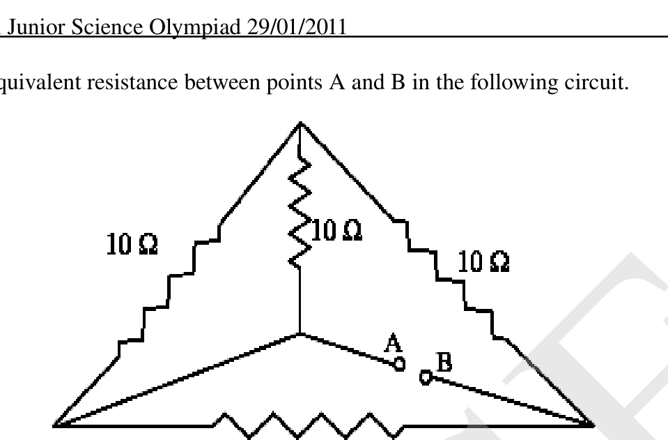
- (a)
- (b)
- (c)
- (d) None of these
Topic: Circuits Metodi: Equivalent Circuit Reduction Competenze: Physical Reasoning Objects: Resistor Fonte: Testo (PDF) — p.8
Calcolare la resistenza equivalente tra i punti A e B nel circuito seguente. [1]
Quesito 29
- (a)
- (b)
- (c)
- (d) Nessuna di queste
Topic: Circuits Metodi: Equivalent Circuit Reduction Competenze: Physical Reasoning Objects: Resistor Fonte: Testo (PDF) — p.8
It is known that among corn plants, a tall plant (T) trait is dominant over dwarf (t), and the coloured kernel (C) trait is dominant is over white (c). Which of the following results represents the outcome of a cross between corn plants containing dihybrid parents? [1]
- (a) F2 generation has 5 homozygous and 11 heterozygous individuals.
- (b) F2 generation has 4 homozygous, 4 double heterozygous and 8 intermediates.
- (c) F2 generation has all dominant forms of morphological characters.
- (d) F2 generation has all recessive forms of morphological characters.
Topic: Biology Metodi: Physical Modeling Competenze: Physical Reasoning Objects: — Fonte: Testo (PDF) — p.8
Si sa che tra le piante di mais, un tratto di pianta alta (T) è dominante su nano (t), e il tratto di kernel colorato (C) è dominante su bianco (c). Quale dei seguenti risultati rappresenta il risultato di un incrocio tra piante di mais contenenti genitori di ibridi? [1]
- (a) La generazione F2 ha 5 individui omosigoti e 11 eterosigoti.
- b) La generazione F2 ha 4 omosigoti, 4 doppi eterosigoti e 8 intermedi.
- (c) La generazione F2 ha tutte le forme dominanti di caratteri morfologici.
- (d) La generazione F2 ha tutte le forme recessive di caratteri morfologici.
Topic: Biology Metodi: Physical Modeling Competenze: Physical Reasoning Objects: — Fonte: Testo (PDF) — p.8
Each of the following four visuals represent food chains. The lowermost dot in each of the visual represents autotrophs. Observe them carefully and select the one which represents the most stable ecological community. [1]
Quesito 31
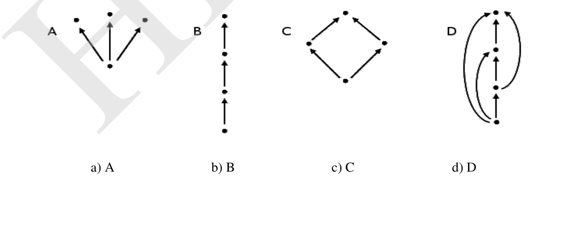
- (a) A
- (b) B
- (c) C
- (d) D
Topic: Biology Metodi: Physical Modeling Competenze: Diagrammatic Reasoning Objects: — Fonte: Testo (PDF) — p.8
Ciascuno dei seguenti quattro immagini rappresenta le catene alimentari. Il punto più basso di ciascuna immagine rappresenta gli autotrofi. Osservateli attentamente e scegliete quello che rappresenta la comunità ecologica più stabile. [1]
Quesito 31
- (a) A
- (b) B
- (c) C
- (d) D
Topic: Biology Metodi: Physical Modeling Competenze: Diagrammatic Reasoning Objects: — Fonte: Testo (PDF) — p.8
A certain quantity of a gas occupies a volume of 0.1 L when collected over water at 10°C and a pressure 0.90 atm. The same gas occupied a volume of 0.080 L at STP in dry conditions. Calculate the aqueous tension at 10°C. [1]
- (a) 0.061
- (b) 0.051
- (c) 0.071
- (d) 0.081
Topic: Kinetic Theory Metodi: Ideal Gas Law Competenze: Physical Reasoning Objects: Gas Fonte: Testo (PDF) — p.9
Una certa quantità di gas occupa un volume di 0,1 L quando viene raccolta sopra l’acqua a 10°C e a una pressione di 0,90 atm. Lo stesso gas ha occupato un volume di 0,080 l a STP in condizioni di secco. Calcolare la tensione acquosa a 10°C. [1]
- (a) 0.061
- (b) 0.051
- (c) 0.071
- (d) 0.081
Topic: Kinetic Theory Metodi: Ideal Gas Law Competenze: Physical Reasoning Objects: Gas Fonte: Testo (PDF) — p.9
Force (F), velocity (v), time (T) and temperature () are chosen as fundamental quantities. Obtain dimensions of specific latent heat. [1]
- (a)
- (b)
- (c)
- (d)
Topic: Order-of-Magnitude Estimation Metodi: Dimensional Analysis Competenze: Physical Reasoning Objects: — Fonte: Testo (PDF) — p.9
La forza (F), la velocità (v), il tempo (T) e la temperatura () sono scelti come quantità fondamentali. Ottenere le dimensioni del calore latente specifico. [1]
- (a)
- (b)
- (c)
- (d)
Topic: Order-of-Magnitude Estimation Metodi: Dimensional Analysis Competenze: Physical Reasoning Objects: — Fonte: Testo (PDF) — p.9
Velocity time graph of four athletes for a given interval of time are as given below. Who has travelled maximum distance? [1]
Quesito 34
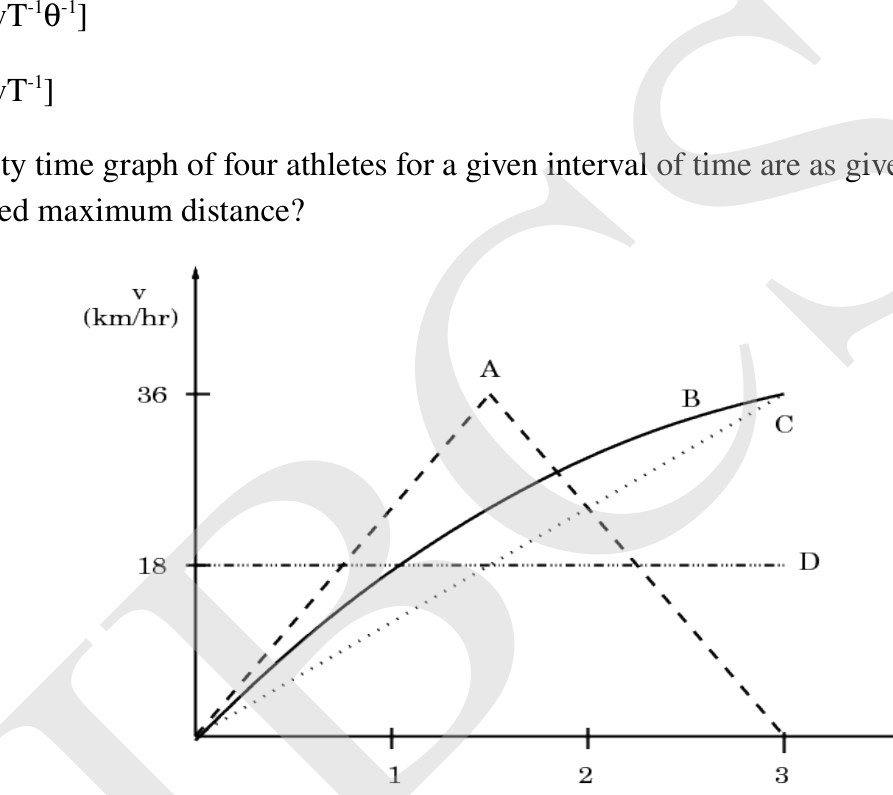
- (a) A
- (b) B
- (c) C
- (d) D
Topic: Newtonian Mechanics Metodi: Kinematic Equations Competenze: Diagrammatic Reasoning Objects: — Fonte: Testo (PDF) — p.9
Il grafico temporale di velocità di quattro atleti per un determinato intervallo di tempo è il seguente. Chi ha percorso la distanza massima? [1]
Quesito 34
- (a) A
- (b) B
- (c) C
- (d) D
Topic: Newtonian Mechanics Metodi: Kinematic Equations Competenze: Diagrammatic Reasoning Objects: — Fonte: Testo (PDF) — p.9
A certain sample of concentrated hydrochloric acid contains 50% HCl by mass and has density . What is the molarity of this sample? [1]
- (a) 16.4 M
- (b) 8.2 M
- (c) 32.8 M
- (d) 13.4 M
Topic: Chemistry Metodi: Physical Modeling Competenze: Unit Conversion Objects: — Fonte: Testo (PDF) — p.9
Un determinato campione di acido cloridrico concentrato contiene 50% di HCl in massa e ha una densità . Qual è la molarità di questo campione? [1]
- (a) 16.4 M
- (b) 8.2 M
- (c) 32.8 M
- (d) 13.4 M
Topic: Chemistry Metodi: Physical Modeling Competenze: Unit Conversion Objects: — Fonte: Testo (PDF) — p.9
The diagram below represents the ‘Central Dogma’ of molecular biology. Choose the correct combination of labeling. [1]
Quesito 36
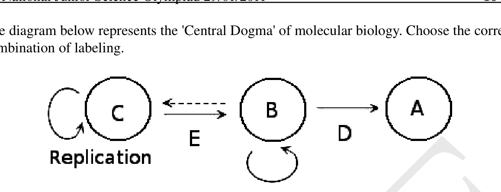
- (a) A = Protein, B = RNA, C = DNA, D = Translation, E = Transcription
- (b) A = RNA, B = DNA, C = Protein, E = Transcription, D = Translation
- (c) A = Translation, B = DNA, C = Protein, D = Transcription, E = RNA
- (d) A = DNA, B = RNA, C = Protein, D = Transcription, E = Translation
Topic: Biology Metodi: Physical Modeling Competenze: Diagrammatic Reasoning Objects: — Fonte: Testo (PDF) — p.10
Il diagramma di seguito rappresenta il “Dogma centrale” della biologia molecolare. Scegliere la corretta combinazione di etichettatura. [1]
Quesito 36
- (a) A = proteine, B = RNA, C = DNA, D = traduzione, E = trascrizione
- (b) A = RNA, B = DNA, C = proteine, E = trascrizione, D = traduzione
- (c) A = traduzione, B = DNA, C = proteine, D = trascrizione, E = RNA
- (d) A = DNA, B = RNA, C = Proteine, D = Trascrizione, E = Traduzione
Topic: Biology Metodi: Physical Modeling Competenze: Diagrammatic Reasoning Objects: — Fonte: Testo (PDF) — p.10
Which of the following is an ex situ method of conservation? [1]
- (a) Agro-forestry
- (b) Sanctuary
- (c) Cryopreservation
- (d) Biosphere reserve
Topic: Biology Metodi: Physical Modeling Competenze: Physical Reasoning Objects: — Fonte: Testo (PDF) — p.10
Quale dei seguenti è un metodo di conservazione ex situ **? [1]
- a) Agroforestazione
- b) Rifugio
- c) Cronacontenzione
- d) Riserva della biosfera
Topic: Biology Metodi: Physical Modeling Competenze: Physical Reasoning Objects: — Fonte: Testo (PDF) — p.10
Three plane mirrors are kept mutually perpendicular. From a certain point in front of them, a ray of light is incident on mirror in such a way that it is successively reflected from , and mirror. The ray after reflection from mirror will be [1]
- (a) passing through the same point.
- (b) perpendicular to the initial ray.
- (c) parallel to the initial ray.
- (d) along any direction depending upon initial angle of incidence.
Topic: Geometric Optics Metodi: Ray Tracing Competenze: Diagrammatic Reasoning Objects: Mirror Fonte: Testo (PDF) — p.10
Tre specchi piani sono tenuti reciprocamente perpendicolari. Da un certo punto di fronte a essi, un raggio di luce incide sul specchio in modo tale che esso si riflette successivamente dallo specchio , e . Il raggio dopo il riflesso dello specchio sarà [1]
- a) passando attraverso lo stesso punto.
- b) perpendicolare al raggio iniziale.
- (c) parallelo al raggio iniziale.
- d) lungo qualsiasi direzione a seconda dell’angolo iniziale di incidenza.
Topic: Geometric Optics Metodi: Ray Tracing Competenze: Diagrammatic Reasoning Objects: Mirror Fonte: Testo (PDF) — p.10
In the reaction:
i) ii) [1]
- (a) is reduced both in i) & ii)
- (b) is oxidized both in i) & ii)
- (c) is oxidized in i) & reduced in ii)
- (d) is reduced in i) & oxidized in ii)
Topic: Chemistry Metodi: Physical Modeling Competenze: Physical Reasoning Objects: — Fonte: Testo (PDF) — p.10
Nella reazione:
i) ii) [1]
- a) il è ridotto sia in i) che in ii)
- b) è ossidato sia in i) che in ii)
- (c) si ossida in i) e si riduce in ii)
- (d) è ridotto a i) e ossidato a ii)
Topic: Chemistry Metodi: Physical Modeling Competenze: Physical Reasoning Objects: — Fonte: Testo (PDF) — p.10
Alum helps in purifying water by [1]
- (a) Forming Silicon complex with clay particles
- (b) Sulphate part which combines with dirt and removes it
- (c) Compound of Aluminium which coagulates the mud particles.
- (d) Making mud water soluble
Topic: Chemistry Metodi: Physical Modeling Competenze: Physical Reasoning Objects: — Fonte: Testo (PDF) — p.11
L’alluminio aiuta a purificare l’acqua con [1]
- a) Formazione di complessi di silicio con particelle di argilla
- b) Parti di solfato che si combinano con sporcizia e la rimuovono
- c) Composto di alluminio che coagula le particelle di fango.
- d) Rendere solubile l’acqua di fango
Topic: Chemistry Metodi: Physical Modeling Competenze: Physical Reasoning Objects: — Fonte: Testo (PDF) — p.11
Assume that there is a set of triplets in which two of them were identical, separated at birth and were brought up by different families. After 25 years, the three individuals were traced and brought together. The following data was recorded. Study the data carefully and infer which are the identical twins. [1]
| Traits | Person ‘A’ | Person ‘B’ | Person ‘C’ |
|---|---|---|---|
| Height | 190 cm | 190 cm | 180 cm |
| Weight | 60 Kg | 65 Kg | 75 Kg |
| Blood group | O | AB | O |
| Measure of intelligence | 135 | 140 | 125 |
| Skin colour | White | White | Dark |
- (a) AB
- (b) AC
- (c) CB
- (d) BC
Topic: Biology Metodi: Physical Modeling Competenze: Physical Reasoning Objects: — Fonte: Testo (PDF) — p.11
Supponiamo che ci sia un insieme di triplici in cui due di loro erano identici, separati alla nascita e cresciuti da famiglie diverse. Dopo 25 anni, i tre individui furono rintracciati e riuniti. Sono stati registrati i seguenti dati. Studiate attentamente i dati e deducete quali sono i gemelli identici. [1]
Tratti Persona A Persona B Persona C | --- | --- | --- | --- |
Alto 190 cm # # 190 cm # 180 cm
Peso # 60 kg # 65 kg # 75 kg
Il gruppo sanguigno # # O # AB # O
♬ Misura di intelligenza ♬ 135 ♬ 140 ♬ 125 ♬
Colore della pelle # Bianco bianco # Scuro
- (a) AB
- (b) AC
- (c) CB
- (d) BC
Topic: Biology Metodi: Physical Modeling Competenze: Physical Reasoning Objects: — Fonte: Testo (PDF) — p.11
Three identical electric bulbs are connected parallel to each other. On connecting their combination across a source of emf having stabilized voltage and negligible resistance, all bulbs glow with full brightness. Suddenly a bulb fuses. The other bulbs will glow… [1]
- (a) brighter
- (b) dimmer
- (c) with same initial intensity
- (d) zero, as those will also fuse.
Topic: Circuits Metodi: Kirchhoff’s Laws Competenze: Physical Reasoning Objects: Battery Fonte: Testo (PDF) — p.11
Tre lampadine elettriche identiche sono collegate parallele tra loro. Quando si collegano la loro combinazione attraverso una fonte di emf che ha una tensione stabilizzata e una resistenza trascurabile, tutte le lampadine brillano con piena luminosità. All’improvviso una lampadina si funge. Le altre lampadine accenderanno… [1]
- a) più luminoso
- b) dimmer
- c) con la stessa intensità iniziale
- d) zero, poiché anche questi si fonderanno.
Topic: Circuits Metodi: Kirchhoff’s Laws Competenze: Physical Reasoning Objects: Battery Fonte: Testo (PDF) — p.11
You are given two identical steel pieces A and B and only one of those is magnetized. In all the following arrangements, there is attraction between A and B. Which of the following arrangements helps us in identifying the magnet? [1]
Quesito 43
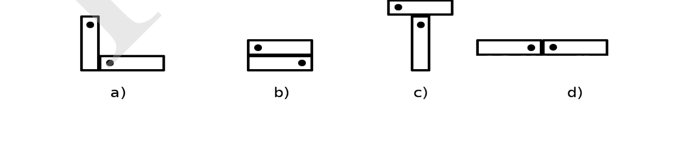
Topic: Magnetism Metodi: Physical Modeling Competenze: Diagrammatic Reasoning Objects: Magnet Fonte: Testo (PDF) — p.11
Vi vengono dati due pezzi di acciaio identici A e B e solo uno di questi è magnetizzato. In tutti i seguenti accordi, vi è un’attrazione tra A e B. Quale delle seguenti disposizioni ci aiuta a identificare il magnete? [1]
Quesito 43
Topic: Magnetism Metodi: Physical Modeling Competenze: Diagrammatic Reasoning Objects: Magnet Fonte: Testo (PDF) — p.11
Rust is a mixture of [1]
- (a) FeO and
- (b) FeO and
- (c) and
- (d) and
Topic: Chemistry Metodi: Physical Modeling Competenze: Physical Reasoning Objects: — Fonte: Testo (PDF) — p.12
La ruggine è una miscela di [1]
- a) FeO e
- b) FeO e
- c) e
- (d) e
Topic: Chemistry Metodi: Physical Modeling Competenze: Physical Reasoning Objects: — Fonte: Testo (PDF) — p.12
Shirin had been on a holiday to Ooty. In her school, she has studied about the interesting world of plants. On the day of her return she collected four groups of plants – I, II, III and IV. She carefully noted some of their details and arranged the information in the form of a table as given below. Her teacher agreed to tell her descriptions about all plants if she could by looking at the information in the table say which of the groups of plants she collected represented pteridophytes. Take a look at the data and suggest which of the groups could be of pteridophytes. [1]
| Sr | Characters | Plant group I | Plant group II | Plant group III | Plant group IV |
|---|---|---|---|---|---|
| 1. | Autotrophic | Yes | Yes | No | No |
| 2. | Terrestrial | No | Yes | Yes | Yes |
| 3. | Presence of vascular tissue | No | Yes | Yes | No |
| 4. | Flowers produced | No | No | Yes | No |
- (a) Plant group I
- (b) Plant group II
- (c) Plant group III
- (d) Plant group IV
Topic: Biology Metodi: Physical Modeling Competenze: Diagrammatic Reasoning Objects: — Fonte: Testo (PDF) — p.12
Shirin era in vacanza a Ooty. Nella sua scuola, ha studiato l’interessante mondo delle piante. Il giorno del suo ritorno raccolse quattro gruppi di piante I, II, III e IV. Ha notato attentamente alcuni dei loro dettagli e ha organizzato le informazioni sotto forma di una tabella come riportato qui sotto. Il suo insegnante acconsentì a raccontarle le descrizioni di tutte le piante se potesse, guardando le informazioni della tabella, dire quale dei gruppi di piante raccolte rappresentava i pteridofiti. Date un’occhiata ai dati e suggerite quale dei gruppi potrebbe essere di pteridofiti. [1]
♬ Personalità di Sr ♬ Gruppo di piante I ♬ Gruppo di piante II ♬ Gruppo di piante III ♬ Gruppo di piante IV ♬ | --- | --- | --- | --- | --- | --- | | 1. # Sono autotrofico # Sì # Sì # No # No # | 2. # Il mondo # No Sì Sì Sì Sì | 3. # La presenza di tessuto vascolare # # No # Sì # # Sì # No # | 4. # I fiori sono stati prodotti # No, no, no, no, no, no.
- a) Gruppo di piante I
- b) Gruppo di piante II
- c) Gruppo vegetale III
- d) Gruppo di piante IV
Topic: Biology Metodi: Physical Modeling Competenze: Diagrammatic Reasoning Objects: — Fonte: Testo (PDF) — p.12
If the product of the gas constant R and NTP temperature (in Kelvin) is 22.4, the compressibility factor of the gas at 1 atmospheric pressure is [1]
- (a) greater than one
- (b) one
- (c) less than one
- (d) zero
Topic: Kinetic Theory Metodi: Ideal Gas Law Competenze: Physical Reasoning Objects: Gas Fonte: Testo (PDF) — p.12
Se il prodotto della temperatura della costante del gas R e della temperatura NTP (in Kelvin) è 22,4, il fattore di compressibilità del gas a 1 pressione atmosferica è [1]
- a) più di una
- b) uno
- c) meno di una
- d) zero
Topic: Kinetic Theory Metodi: Ideal Gas Law Competenze: Physical Reasoning Objects: Gas Fonte: Testo (PDF) — p.12
From a distance much greater than 2R (R = Radius of curvature), a real object is brought close to a convex mirror. Distance between object and the image [1]
- (a) throughout decreases
- (b) throughout increases
- (c) decreases upto f
- (d) first decreases then increases
Topic: Geometric Optics Metodi: Thin Lens & Mirror Equation Competenze: Physical Reasoning Objects: Mirror Fonte: Testo (PDF) — p.12
Da una distanza molto superiore a 2R (R = raggio di curvatura), un oggetto reale viene portato vicino a uno specchio convexo. Distanza tra l’oggetto e l’immagine [1]
- a) per tutta la durata delle diminuzioni
- b) durante gli aumenti
- c) diminuisce fino a f
- d) prima diminuisce e poi aumenta
Topic: Geometric Optics Metodi: Thin Lens & Mirror Equation Competenze: Physical Reasoning Objects: Mirror Fonte: Testo (PDF) — p.12
A pure dwarf Pisum sativum (pea) plant was treated with Gibberellic acid (GA3). It then becomes tall. If this plant is crossed with a pure tall plant, what will be the phenotype in the next generation. [1]
- (a) 100% tall
- (b) 50% tall and 50% dwarf
- (c) 75% tall and 25% dwarf
- (d) 100% dwarf
Topic: Biology Metodi: Physical Modeling Competenze: Physical Reasoning Objects: — Fonte: Testo (PDF) — p.13
Una pianta nana pura Pisum sativum (piè) è stata trattata con acido gibberellico (GA3). Diventa poi alta. Se questa pianta viene incrociata con una pianta alta pura, quale sarà il fenotipo nella prossima generazione. [1]
- a) Alto al 100%
- b) Alti del 50% e nani del 50%
- c) Alti del 75% e nani del 25%
- d) Nano al 100%
Topic: Biology Metodi: Physical Modeling Competenze: Physical Reasoning Objects: — Fonte: Testo (PDF) — p.13
In the following table, column A represents different proteins and column B has examples of the proteins. Choose among the given options the most appropriate match for proteins in column A with examples in column B? [1]
| Column A | Column B |
|---|---|
| A) Keratin | (i) Silk |
| B) Collagen | (ii) Hooves |
| C) Fibroin | (iii) Pterridine |
| D) Globular | (iv) Ligaments |
- (a) A)-(ii); B)-(iv); C)-(i); D)-(iii)
- (b) A)-(ii); B)-(iii); C)-(iv); D)-(i)
- (c) A)-(i); B)-(iv); C)-(ii); D)-(iii)
- (d) A)-(iv); B)-(ii); C)-(i); D)-(iii)
Topic: Biology Metodi: Physical Modeling Competenze: Physical Reasoning Objects: — Fonte: Testo (PDF) — p.13
Nella tabella seguente, la colonna A rappresenta proteine diverse e la colonna B presenta esempi di proteine. Scegliere tra le opzioni indicate la corrispondenza più appropriata per le proteine della colonna A con gli esempi della colonna B? [1]
Colonna A # Colonna B
| --- | --- |
A) Keratina # I) Seta
B) Collagene # II) Cappelli
C) fibromica # III Pteridine
D) globolare # IV. Legamenti
- a) A) - 2) b) - 4) iv) C) - 1) i) D) - 3)
- b) A) - 2) b) - 3) c) - 4) iv) D) - 1) i)
- c) A) - I); B) - IV); C) - II); D) - III)
- d) A) - 4) iv); B) - 2) c) - 1) i); D) - 3)
Topic: Biology Metodi: Physical Modeling Competenze: Physical Reasoning Objects: — Fonte: Testo (PDF) — p.13
In the figure shown below, there are two tanks I and II with cross-sectional area and , respectively. The rate of flow of water between I and II will depend on
i) ii) iii)
Quesito 50
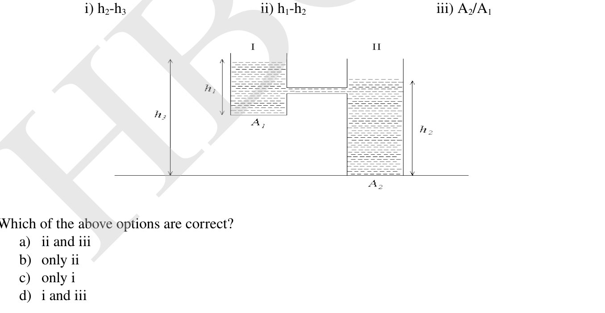
Which of the above options are correct? [1]
- (a) ii and iii
- (b) only ii
- (c) only i
- (d) i and iii
Topic: Fluid Mechanics Metodi: Bernoulli’s Equation, Continuity Equation Competenze: Physical Reasoning Objects: Container Fonte: Testo (PDF) — p.13
Nella figura riportata di seguito, ci sono due serbatoi I e II con superficie trasversale e , rispettivamente. Il tasso di flusso d’acqua tra I e II dipenderà da
i) ii) iii)
Quesito 50
Quali delle opzioni sopra indicate sono corrette? [1]
- a) ii e iii
- b) solo ii
- (c) solo i
- d) i e iii
Topic: Fluid Mechanics Metodi: Bernoulli’s Equation, Continuity Equation Competenze: Physical Reasoning Objects: Container Fonte: Testo (PDF) — p.13
In the Haber process for the synthesis of ammonia, amount of ammonia formed will be more if: [1]
- (a) pressure is decreased and temperature is increased
- (b) pressure is increased and temperature is decreased
- (c) both pressure and temperature are increased
- (d) both pressure and temperature are decreased
Topic: Chemistry Metodi: Physical Modeling Competenze: Physical Reasoning Objects: Gas Fonte: Testo (PDF) — p.14
Nel processo Haber per la sintesi dell’ammoniaca, la quantità di ammoniaca formata sarà maggiore se: [1]
- a) diminuzione della pressione e aumento della temperatura
- b) aumenta la pressione e diminuisce la temperatura
- c) sia la pressione che la temperatura sono aumentate
- d) sia la pressione che la temperatura sono diminuite
Topic: Chemistry Metodi: Physical Modeling Competenze: Physical Reasoning Objects: Gas Fonte: Testo (PDF) — p.14
Which of the following sequence is correct in terms of the polarity of bond [1]
- (a) N-F > C-F > B-F
- (b) B-F > C-F > N-F
- (c) C-F > N-F > B-F
- (d) B-F > N-F > C-F
Topic: Chemistry Metodi: Physical Modeling Competenze: Physical Reasoning Objects: — Fonte: Testo (PDF) — p.14
Qual è la sequenza corretta in termini di polarità del legame [1]
- (a) N-F > C-F > B-F
- (b) B-F > C-F > N-F
- (c) C-F > N-F > B-F
- (d) B-F > N-F > C-F
Topic: Chemistry Metodi: Physical Modeling Competenze: Physical Reasoning Objects: — Fonte: Testo (PDF) — p.14
Which of the following does not happen during the Calvin cycle? [1]
- (a) Regeneration of the acceptor
- (b) Oxidation of NADPH
- (c) Release of oxygen
- (d) Consumption of ATP
Topic: Biology Metodi: Physical Modeling Competenze: Physical Reasoning Objects: — Fonte: Testo (PDF) — p.14
Quale delle seguenti cose non accade durante il ciclo calvino? [1]
- a) Regenerazione dell’accettore
- b) Oxidazione del NADPH
- (c) rilascio di ossigeno
- d) Consumo di ATP
Topic: Biology Metodi: Physical Modeling Competenze: Physical Reasoning Objects: — Fonte: Testo (PDF) — p.14
Two solid cylinders 1 and 2 (mass and radius ) roll down from the rest on an inclined plane such that there is no loss of energy due to friction. Which of the spheres will reach at the bottom first [1]
- (a) cylinder 1
- (b) cylinder 2
- (c) cylinder with greater moment of inertia
- (d) both will reach at same time
Topic: Rotational Dynamics, Conservation of Energy Metodi: Torque & Angular Momentum Analysis, Conservation of Energy Competenze: Physical Reasoning Objects: Cylinder, Inclined Plane Fonte: Testo (PDF) — p.14
Due cilindri solidi 1 e 2 (massa e raggio ) ruotano dal resto su un piano inclinato in modo tale da non perdere energia a causa dell’attrito. Quale delle sfere raggiungerà il fondo per primo [1]
- a) cilindro 1
- b) cilindro 2
- (c) cilindro con maggiore momento di inerzia
- d) entrambi raggiungeranno contemporaneamente
Topic: Rotational Dynamics, Conservation of Energy Metodi: Torque & Angular Momentum Analysis, Conservation of Energy Competenze: Physical Reasoning Objects: Cylinder, Inclined Plane Fonte: Testo (PDF) — p.14
Immunity can be gained actively or passively. When the antibodies to antigens are produced by our own bodies, we call it active immunity. We acquire passive immunity by receiving antibodies that were not made by our own bodies. Which of the following options is the correct match of the type of immunity with the appropriate example. [1]
| i) Naturally acquired ACTIVE IMMUNITY | i) Jasmine was vaccinated for Polio to protect her against the disease. |
| ii) Artificially acquired ACTIVE IMMUNITY | ii) Robin was bitten by a viper and was given two doses of anti-venom. |
| iii) Naturally acquired PASSIVE IMMUNITY | iii) Imran suffered from Chicken pox in childhood and is now possibly immune to another chicken pox attack. |
| iv) Artificially acquired PASSIVE IMMUNITY | iv) Ria was advised by doctors to breast feed her new born in order to improve infant’s immunity. |
- (a) A → i, B → iii, C → ii, D → iv
- (b) A → iii, B → i, C → iv, D → ii
- (c) A → i, B → iii, C → iv, D → ii
- (d) A → iii, B → i, C → ii, D → iv
Topic: Biology Metodi: Physical Modeling Competenze: Physical Reasoning Objects: — Fonte: Testo (PDF) — p.14
L’immunità può essere acquisita attivamente o passivamente. Quando gli anticorpi contro gli antigeni sono prodotti dal nostro corpo, lo chiamiamo immunità attiva. Acquistamo l’immunità passiva ricevendo anticorpi che non sono stati fatti dal nostro corpo. Qual è l’opzione corretta di corrispondere il tipo di immunità con l’esempio appropriato? [1]
i) Acquistata in modo naturale # i) Jasmine è stata vaccinata contro la poliomielite per proteggerla dalla malattia. |
II) IMMUNITÀ ACTA ARTIFICIALE # II) Robin è stato morso da una vipera e ha ricevuto due dosi di antiveleno. |
Il primo è che il bambino è stato infettato da varicose di polpo. |
iv) IMMUNITÀ PASSIVA artificiale # iv) # Ria è stata consigliata dai medici di allattare il seno al suo neonato per migliorare l’immunità del bambino. |
- a) A → i, B → iii, C → ii, D → iv
- b) A → iii, B → i, C → iv, D → ii
- c) A → i, B → iii, C → iv, D → ii
- d) A → iii, B → i, C → ii, D → iv
Topic: Biology Metodi: Physical Modeling Competenze: Physical Reasoning Objects: — Fonte: Testo (PDF) — p.14
If HCl molecule is completely ionic the and ions would bear a unit charge equal to esu and the bond distance between H and Cl atom is 1.27 Å then the dipole moment of HCl is [1]
- (a) 3.779 D
- (b) 7.742 D
- (c) 6.098 D
- (d) 2.976 D
Topic: Chemistry, Electrostatics Metodi: Coulomb’s Law Competenze: Unit Conversion Objects: — Fonte: Testo (PDF) — p.15
Se la molecola di HCl è completamente ionica, gli ioni e avrebbero una carica unitaria pari a esu e la distanza di legame tra atomi H e Cl è di 1,27 Å, allora il momento di dipolo di HCl è [1]
- (a) 3.779 D
- (b) 7.742 D
- (c) 6.098 D
- (d) 2.976 D
Topic: Chemistry, Electrostatics Metodi: Coulomb’s Law Competenze: Unit Conversion Objects: — Fonte: Testo (PDF) — p.15
A reel rests on a friction less surface. Two forces each of magnitude F are applied on the opposite direction on the edges of the rod as shown in the figure below. Which of the following quantities are non-zero and constant:
(i) angular momentum (ii) angular acceleration (iii) Total force (iv) total torque (v) total linear momentum (vi) total kinetic energy (vii) moment of inertia (viii) translation kinetic energy [1]
Quesito 57
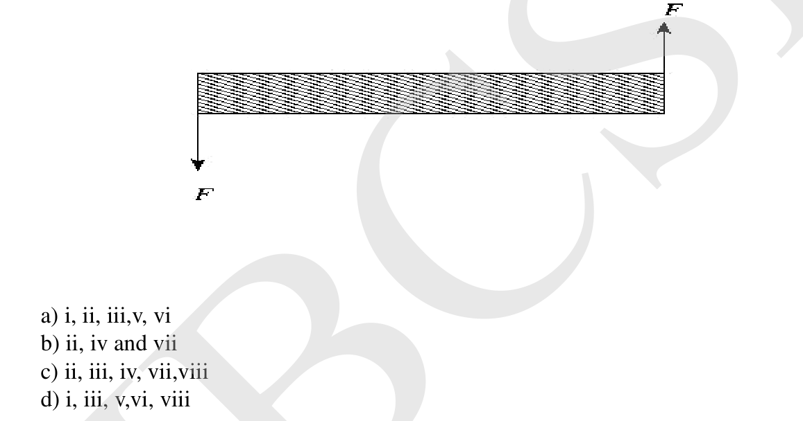
- (a) i, ii, iii, v, vii
- (b) ii, iv and vii
- (c) ii, iii, iv, vii, viii
- (d) i, iii, v, vi, viii
Topic: Rotational Dynamics Metodi: Torque & Angular Momentum Analysis Competenze: Physical Reasoning Objects: — Fonte: Testo (PDF) — p.15
Un rulli si basa su una superficie meno attritiva. Due forze di magnitudo F sono applicate in direzione opposta sui bordi della canna come mostrato nella figura seguente. Quali delle seguenti quantità sono non zero e costanti:
(i) impulso angolare (ii) accelerazione angolare (iii) forza totale (iv) coppia totale (v) impulso lineare totale (vi) energia cinetica totale (vii) momento di inerzia (viii) energia cinetica di traslazione [1]
Quesito 57
- a) i, ii, iii, v, vii
- b) ii, iv e vii
- c) ii, iii, iv, vii, viii
- d) i, iii, v, vi, viii
Topic: Rotational Dynamics Metodi: Torque & Angular Momentum Analysis Competenze: Physical Reasoning Objects: — Fonte: Testo (PDF) — p.15
The pH of solution X is 2 and that of Y is 4. Which statement is correct about the hydrogen ion concentrations in the two solutions? [1]
- (a) in X is half that in Y.
- (b) in X is twice that in Y.
- (c) in X is ten times of that in Y.
- (d) in X is hundred times that in Y.
Topic: Chemistry Metodi: Physical Modeling Competenze: Physical Reasoning Objects: — Fonte: Testo (PDF) — p.15
Il pH della soluzione X è 2 e quello di Y è 4. Quale affermazione è corretta riguardo alle concentrazioni di ioni di idrogeno nelle due soluzioni? [1]
- (a) in X è la metà di quella in Y.
- b) in X è il doppio di quello in Y.
- (c) in X è dieci volte superiore a quello in Y.
- (d) in X è cento volte superiore a quello in Y.
Topic: Chemistry Metodi: Physical Modeling Competenze: Physical Reasoning Objects: — Fonte: Testo (PDF) — p.15
In the figure given below what is the value of R between points A and B? [1]
Quesito 59
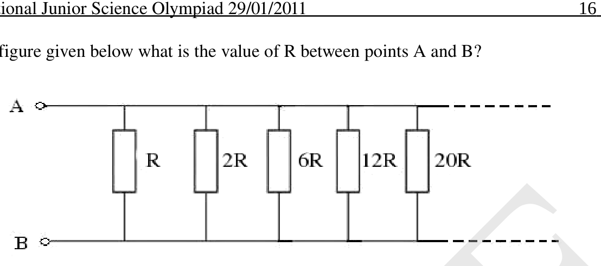
- (a)
- (b) R
- (c) 0
- (d)
Topic: Circuits Metodi: Equivalent Circuit Reduction Competenze: Physical Reasoning Objects: Resistor Fonte: Testo (PDF) — p.16
Nella figura seguente quale è il valore di R tra i punti A e B? [1]
Quesito 59
- (a)
- (b) R
- (c) 0
- (d)
Topic: Circuits Metodi: Equivalent Circuit Reduction Competenze: Physical Reasoning Objects: Resistor Fonte: Testo (PDF) — p.16
The average molecular weight of a standard amino acid is 128 dalton. Assume that a scientist has synthesized a new protein molecule which is composed of 250 of these amino acids. Also, we know that molecular weight of a water molecule is 18. The best estimate of molecular weight of synthesized protein will be… [1]
- (a) 32000 dalton
- (b) 27518 dalton
- (c) 27500 dalton
- (d) 27000 dalton
Topic: Biology Metodi: Physical Modeling Competenze: Estimation & Approximation Objects: — Fonte: Testo (PDF) — p.16
Il peso molecolare medio di un aminoacido standard è di 128 dalton. Supponiamo che uno scienziato abbia sintetizzato una nuova molecola proteica composta da 250 di questi amminoacidi. Inoltre, sappiamo che il peso molecolare di una molecola d’acqua è 18. La migliore stima del peso molecolare delle proteine sintetizzate sarà… [1]
- a) 32000 daltoni
- b) 27518 daltoni
- c) 27500 daltoni
- d) 27000 daltoni
Topic: Biology Metodi: Physical Modeling Competenze: Estimation & Approximation Objects: — Fonte: Testo (PDF) — p.16
Section B (analytical / long questions). Questions 61 to 68 carry 5 marks each. Marks will also be indicated in the questions if there are more than one part to it.
Osmosis is the movement of water molecules from a region of their higher concentration (dilute solution) to a region of their lower concentration (concentrated solution) through a semi-permeable membrane. Water potential is the tendency of water molecules to move from one place to another through membranes. It is denoted by and is measured in terms of the unit called “pascals”.
Water potential of a plant cell is affected by 2 factors, viz; solute concentration and the pressure generated when solute enters and inflates a plant cell. When a solute is dissolved in pure water, concentration of water molecules reduces and hence water potential lowers down. The amount of this lowering is known as the solute potential. Water potential is therefore reduced when solute is added to the system. It is applied to pure water or a solution, its water potential increases. This happens because the pressure is tending to force the water from one place to another. As water is pumped into the plant cell, the pressure generated is termed as pressure potential and is denoted by . Water potential is affected by both solute potential and pressure potential. The relationship between them is given as -
Using the above description, answer the following questions.
- Which of the following statement is correct? (1 Mark)
(a) Pure water has maximum water potential which is always positive. (b) Pure water has minimum water potential which is always negative. (c) All solutions have higher water potentials than pure water and have positive values of . (d) All solutions have lower water potentials than pure water and have negative values of .
-
What is of a flaccid cell? (1 Mark)
-
Following are two neighboring plant cells in contact with each other.
Quesito 61
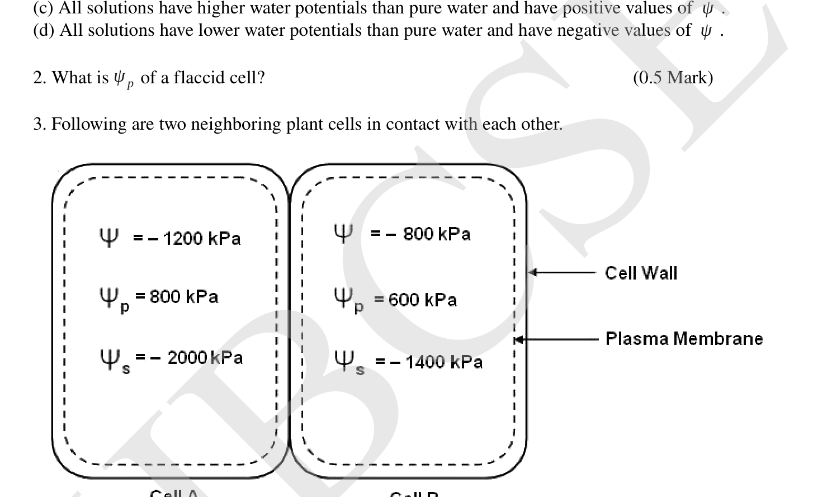
A) Which cell has the higher water potential? (1 Mark) B) In which direction will water move by osmosis? (1 Mark)
-
At equilibrium two cells will have the same water potential. What will be their water potential at equilibrium? (0.5 Mark)
-
Assuming that does not change significantly, what would be at equilibrium in Cell A and Cell B. (1 Mark)
Topic: Biology Metodi: Physical Modeling Competenze: Physical Reasoning Objects: Membrane Fonte: Testo (PDF) — p.16
**Sezione B (interrogazioni analisiche / lunghe). ** Le domande da 61 a 68 contengono 5 punti ciascuno. Le domande sono inoltre segnalate se sono costituite da più di una parte.
L’osmosi è il movimento delle molecole d’acqua da una regione della loro maggiore concentrazione (solvente diluito) a una regione della loro concentrazione inferiore (solvente concentrata) attraverso una membrana semipermeabile. Il potenziale dell’acqua è la tendenza delle molecole d’acqua a spostarsi da un luogo all’altro attraverso le membrane. È indicato da ed è misurato in termini di unità denominate “pascals”.
Il potenziale idrico di una cellula vegetale è influenzato da due fattori: la concentrazione di soluto e la pressione generata quando il soluto entra e gonfia una cellula vegetale. Quando un soluto si dissolve in acqua pura, la concentrazione delle molecole d’acqua diminuisce e quindi il potenziale idrico diminuisce. La quantità di questa riduzione è conosciuta come potenziale di soluto. Il potenziale idrico si riduce quindi quando viene aggiunto al sistema un soluto. Applicato all’acqua pura o a una soluzione, aumenta il suo potenziale idrico. Questo avviene perché la pressione tende a forzare l’acqua da un luogo all’altro. Quando l’acqua viene pompata nella cella della pianta, la pressione generata è denominata potenziale di pressione ed è indicata da . Il potenziale idrico è influenzato sia dal potenziale di soluto che dal potenziale di pressione. La relazione tra loro è data come:
Usando la descrizione sopra, rispondi alle seguenti domande.
- Quale delle seguenti affermazioni è corretta? (1 Marco)
- l’acqua pura ha il massimo potenziale idrico, che è sempre positivo. b) L’acqua pura ha un potenziale idrico minimo che è sempre negativo. c) Tutte le soluzioni hanno potenziali idrici più elevati rispetto all’acqua pura e hanno valori positivi di . d) Tutte le soluzioni hanno potenziali idrici inferiori a quelli dell’acqua pura e hanno valori negativi di .
-
Che cos’è di una cellula flaccida? (1 Marco)
-
Seguono due cellule vegetali vicine che entrano in contatto tra loro.
Quesito 61
A) Quale cellula ha il potenziale idrico più elevato? (1 Marco) B) In che direzione si muoverà l’acqua con l’ossosi? (1 Marco)
-
Al momento dell’equilibrio due celle avranno lo stesso potenziale idrico. Qual sarà il potenziale idrico in equilibrio? (0,5 Marca)
-
Supponendo che non cambi significativamente, quale sarebbe in equilibrio nella cellula A e nella cellula B. (1 Marco)
Topic: Biology Metodi: Physical Modeling Competenze: Physical Reasoning Objects: Membrane Fonte: Testo (PDF) — p.16
a) Momentum of a ball is changed to times its initial value by an application of a force causing it to deflect by 90°. Calculate the angle between the direction of force and the initial momentum. (3 Marks)
b) In a specially designed device, force varies linearly from zero to a max. value of 10 N, over a distance of 8 m. The force remains constant for next 4 m and then reduces linearly to zero over another distance of 2 m. Draw a F vs. x (distance) graph and hence calculate work done by the force over this distance of 2 m. Use the attached graph sheet at the end of the answer booklet. (2 Marks)
Topic: Conservation of Momentum, Newtonian Mechanics Metodi: Impulse-Momentum Theorem, Vector Decomposition Competenze: Diagrammatic Reasoning Objects: Ball Fonte: Testo (PDF) — p.18
a) Il momento di una palla viene cambiato a volte il suo valore iniziale mediante l’applicazione di una forza che la fa deviare di 90°. Calcolare l’angolo tra la direzione della forza e la velocità iniziale. (3 punti)
b) In un dispositivo appositamente progettato, la forza varia linearmente da zero a massimo. valore di 10 N, su una distanza di 8 m. La forza rimane costante per i prossimi 4 m e poi si riduce linearmente a zero su un’altra distanza di 2 m. Disegna un F contro. grafico x (distanza) e quindi calcolare il lavoro svolto dalla forza su questa distanza di 2 m. Utilizzare la scheda grafica allegata alla fine del volantino di risposte. 2 punti
Topic: Conservation of Momentum, Newtonian Mechanics Metodi: Impulse-Momentum Theorem, Vector Decomposition Competenze: Diagrammatic Reasoning Objects: Ball Fonte: Testo (PDF) — p.18
An atom consists of an extremely small and dense nucleus and an extranuclear space. The nucleus contains positively charged protons, neutral neutrons and these particles are collectively called nucleons. In the extranuclear space negatively charged electrons revolve around the nucleus. A region of space around the nucleus of the atom where the electron is most likely to be found is called an orbital. In an atom a large no. of electron orbitals are present. These orbitals are designated by a set of numbers known as quantum nos. describe electronic configuration, energy of an electron in the atom, size, shape and orientation of the electron orbital. An element has 2K, 8L, 13M and 1N electrons. [1.5 Marks]
a) Identify the element and write its electronic configuration with the help of Aufbau Principle. (1.5 Marks) b) How many sub-shells, orbitals and unpaired electrons it has? (1.5 Marks) c) How many electrons have and ? (1 Mark) d) How many electrons in sub-shell have in the given element? (0.5 Mark) e) How many orbitals are possible in 4th energy level of the given element? (0.5 Mark)
Topic: Modern-Quantum Physics Metodi: Bohr Model & Quantization Competenze: Physical Reasoning Objects: Atom, Nucleus, Electron Fonte: Testo (PDF) — p.18
Un atomo è costituito da un nucleo estremamente piccolo e denso e da uno spazio estranucleare. Il nucleo contiene protoni carichi positivamente, neutroni neutri e queste particelle sono chiamate collettivamente nucleoni. Nel spazio estranucleare gli elettroni carichi negativamente ruotano intorno al nucleo. Una regione dello spazio intorno al nucleo dell’atomo dove è più probabile che l’elettrone sia trovato è chiamata orbitale. In un atomo un grande no. di orbitali elettronici sono presenti. Questi orbitali sono designati da un insieme di numeri noti come numeri quantistici. descrivere la configurazione elettronica, l’energia di un elettrone nell’atomo, la dimensione, la forma e l’orientamento dell’orbita elettronica. Un elemento ha elettroni 2K, 8L, 13M e 1N. [1,5 punti]
a) Identificare l’elemento e scrivere la sua configurazione elettronica con l’aiuto del principio di Aufbau. 1,5 marchi) b) Quante sotto-conchiglie, orbitali e elettroni non abbinati ha? 1,5 marchi) c) Quanti elettroni hanno e ? (1 Marco) d) Quanti elettroni nel sotto-caso hanno nell’elemento dato? (0,5 Marca) e) Quanti orbitali sono possibili nel quarto livello energetico dell’elemento dato? (0,5 Marca)
Topic: Modern-Quantum Physics Metodi: Bohr Model & Quantization Competenze: Physical Reasoning Objects: Atom, Nucleus, Electron Fonte: Testo (PDF) — p.18
Find last digit of (2 Marks)
Topic: Mathematics Metodi: Physical Modeling Competenze: Mathematical Modeling Objects: — Fonte: Testo (PDF) — p.18
Trova l’ultimo digitino di (2 punti)
Topic: Mathematics Metodi: Physical Modeling Competenze: Mathematical Modeling Objects: — Fonte: Testo (PDF) — p.18
A rise in the ocean level is expected on account of the melting of icebergs due to global warming. The iceberg B-15 broke off the Ross Ice-Shelf in Antarctica and plunged into the ocean in 2000. We estimate the rise in ocean level due to this event. The iceberg was made of fresh water and shaped as a cuboid of cross sectional area and height . The total ocean surface area is and ocean water has density . (5 Marks)
i. What is the rise in ocean level by the melting of iceberg due to global warming? ii. The iceberg B-15 subsequently melted. What is the additional rise or fall of any in the ocean level due to the melting? Ignore thermal expansion. iii. Estimate the percentage of the earth surface which is covered by ocean water.
Topic: Fluid Mechanics, Earth & Environmental Science Metodi: Hydrostatic Equilibrium Competenze: Estimation & Approximation Objects: — Fonte: Testo (PDF) — p.18
Si prevede un aumento del livello degli oceani a causa del fumo degli iceberg a causa del riscaldamento globale. L’iceberg B-15 ha rotto la piattaforma di ghiaccio di Ross in Antartide e si è immerso nell’oceano nel 2000. Stiamo stimando l’aumento del livello degli oceani a causa di questo evento. L’iceberg era costituito da acqua dolce e aveva la forma di un cuboide di superficie trasversale e di altezza . La superficie totale dell’oceano è e l’acqua oceanica ha una densità . 5 punti
i. Qual è l’aumento del livello degli oceani a causa della fusione di un iceberg a causa del riscaldamento globale? ii. Il ghiacciaio B-15 si è poi sciolto. Qual è l’ulteriore aumento o caduta di qualsiasi livello oceanico dovuto allo scioglimento? Ignora l’espansione termica. iii. Calcolare la percentuale di superficie terrestre coperta dall’acqua oceanica.
Topic: Fluid Mechanics, Earth & Environmental Science Metodi: Hydrostatic Equilibrium Competenze: Estimation & Approximation Objects: — Fonte: Testo (PDF) — p.18
a) Prove that a square of a natural number leaves either 0 or 1 as a remainder upon division by 4. (3 marks)
b) Find, with proof, all positive integers such that is the square of a natural number. (5 marks)
Topic: Mathematics Metodi: Physical Modeling Competenze: Mathematical Modeling Objects: — Fonte: Testo (PDF) — p.19
a) Prove che un quadrato di un numero naturale lascia 0 o 1 come rimanente quando viene diviso per 4. (3 punti)
b) Trova, con la prova, tutti gli integri positivi tali da è il quadrato di un numero naturale. 5 punti)
Topic: Mathematics Metodi: Physical Modeling Competenze: Mathematical Modeling Objects: — Fonte: Testo (PDF) — p.19
a) A titration was carried out to determine the concentration of of an aqueous solution of nitric acid. The pH value of the liquid in the flask was measured at the 0.100 mol of aqueous sodium hydroxide was added. The results are shown on the graph below. (2 Mark)
Quesito 67
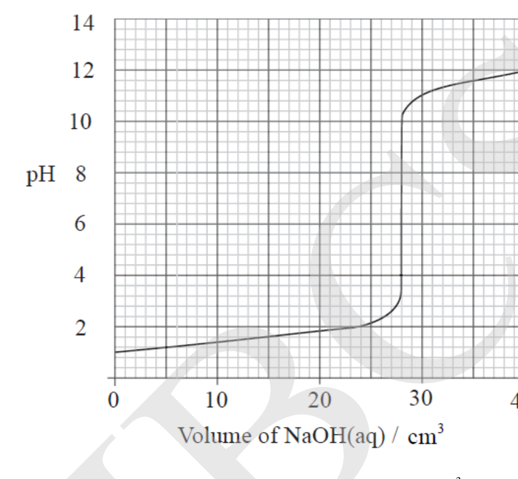
(i) Use the graph to determine the volume of 0.100 mol aqueous sodium hydroxide needed to exactly neutralize the nitric acid. (ii) Determine the pH value when the value of has reached to mol . (iii) Use the graph to determine the value of in the nitric acid solution.
b) Mr. Robert asked Mr. Robin to carry out contact process for the production of oil of vitriol. It was a reaction which they carried out first time and they were not aware that large amount of heat will be released. They produced one mole of sulphur trioxide from sulphur and oxidation individually. They found enthalpy change value for those reactions as 395 kJ and 98 kJ respectively. They decided to find out the heat of formation of sulphur dioxide from these two oxidation reactions. Can you help them to calculate? (3 marks)
Topic: Chemistry Metodi: Experimental Data Analysis Competenze: Experimental Data Analysis Objects: — Fonte: Testo (PDF) — p.19
a) È stata effettuata una titolazione per determinare la concentrazione di di una soluzione acquosa di acido nitrico. Il valore del pH del liquido nel flacone è stato misurato al 0,100 mol di idrossido di sodio acquoso aggiunto. I risultati sono riportati nel grafico seguente. (2 Marco)
Quesito 67
(i) Utilizzare il grafico per determinare il volume di idrossido di sodio acquoso di 0,100 mol necessario per neutralizzare esattamente l’acido nitrico. ii) Determinare il valore del pH quando il valore di ha raggiunto mol . (iii) Utilizzare il grafico per determinare il valore di nella soluzione di acido nitrico.
b) Mr. Robert ha chiesto al signor Robin per effettuare un processo di contatto per la produzione di olio di vitriolo. Si tratta di una reazione che hanno effettuato per la prima volta e non erano consapevoli che una grande quantità di calore sarebbe stata rilasciata. Hanno prodotto un mole di triossido di zolfo da zolfo e ossidazione singolarmente. Hanno trovato un valore di cambiamento di entalpia per tali reazioni rispettivamente di 395 kJ e 98 kJ. Hanno deciso di scoprire il calore di formazione di anidride solforosa da queste due reazioni di ossidazione. Puoi aiutarli a calcolare? (3 punti)
Topic: Chemistry Metodi: Experimental Data Analysis Competenze: Experimental Data Analysis Objects: — Fonte: Testo (PDF) — p.19
The graph shows the activity of three enzymes A,B and C at different pH values. Study the given graph and answer the following. (5 Marks)
Quesito 68
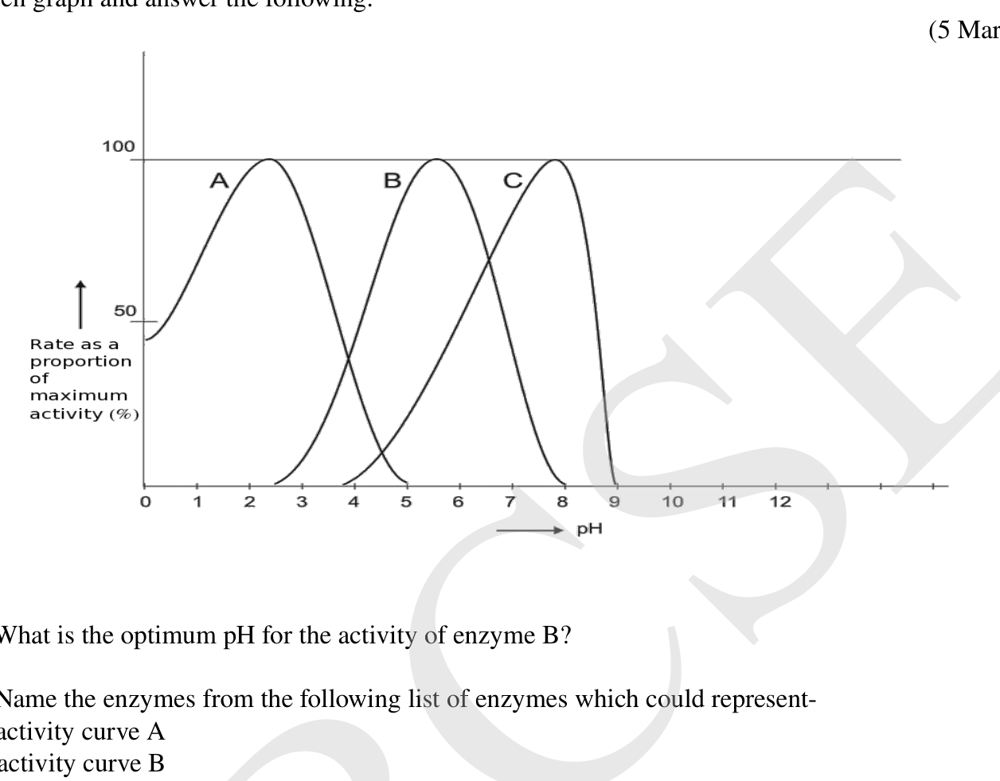
-
What is the optimum pH for the activity of enzyme B?
-
Name the enzymes from the following list of enzymes which could represent- a) activity curve A b) activity curve B
Enzymes: Chymotrypsin, Pepsin, Sucrase, Salivary amylase, Pancreatic lipase, Catalase.
-
What could be the reason for decrease in the activity of enzyme C for the pH between 8 and 9?
-
1 of catalase solution was added to hydrogen peroxide solution at different pH values and the time taken to collect 10 of oxygen was measured. The results are given below. Plot a graph using the given data on the graph sheet attached at the end of the answer booklet.
| pH of solution | Time to collect gas/min |
|---|---|
| 4 | 20 |
| 5 | 12.5 |
| 6 | 10 |
| 7 | 13.6 |
| 8 | 17.4 |
-
What is the optimum pH for catalase activity?
-
Explain what happens to ionisable groups of the active site from pH 4 to 6 and pH 6 to 8?
Topic: Biology Metodi: Experimental Data Analysis Competenze: Experimental Data Analysis Objects: — Fonte: Testo (PDF) — p.20
Il grafico mostra l’attività di tre enzimi A, B e C a valori di pH diversi. Studiate il grafico e rispondavi alle seguenti domande. 5 punti
Quesito 68
-
Qual è il pH ottimale per l’ attività dell’ enzima B?
-
Indicare gli enzimi che figurano nell’elenco seguente di enzimi che potrebbero rappresentare: a) curva di attività A b) curva di attività B
Enzimi: Chymotrypsin, Pepsin, Sucrase, Amilasa salivaria, Lipase pancreatica, Catalase.
-
Qual potrebbe essere la ragione della diminuzione dell’attività dell’enzima C per il pH compreso tra 8 e 9?
-
1 di soluzione di catalase è stato aggiunto alla soluzione di perossido di idrogeno a valori di pH diversi e il tempo necessario per raccogliere 10 di ossigeno è stato misurato. I risultati sono riportati di seguito. Descrivere un grafico utilizzando i dati forniti nella scheda di grafica allegata alla fine del volantino di risposta.
∙ pH della soluzione ∙ Tempo per raccogliere il gas/min | --- | --- | | 4 | 20 | | 5 | 12.5 | | 6 | 10 | | 7 | 13.6 | | 8 | 17.4 |
-
Qual è il pH ottimale per l’attività catalasica?
-
Spiegate cosa succede ai gruppi ionizzabili del sito attivo dal pH 4 al 6 e dal pH 6 al 8?
Topic: Biology Metodi: Experimental Data Analysis Competenze: Experimental Data Analysis Objects: — Fonte: Testo (PDF) — p.20